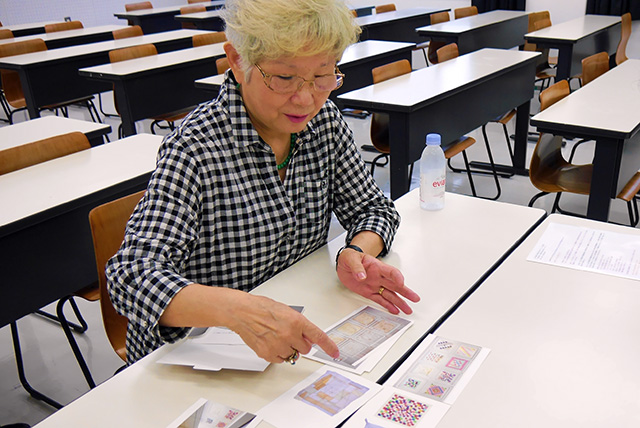
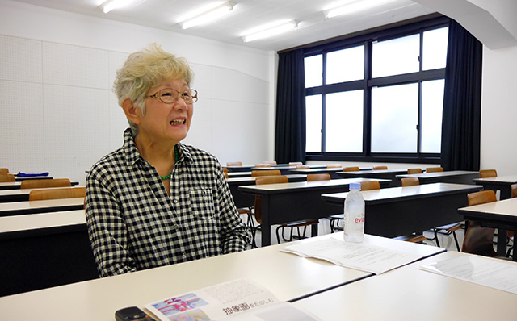

継岡リツ先生インタビュー「生徒から校長を経て」
女子美術大学付属高等学校・中学校の前校長先生も女子美の生徒ー長い間「継岡先生」が見てきた女子美の「歴史」と先生が生み出す「洋画家」としての作品今と昔の違いとは。
継岡先生の作品について
— 作品を制作する際に心がけていることは何ですか？
今は地の色が殆んど無いんです。真っ白のキャンパスに色が所々入っている作品を制作してるんですよ。段々自分の中で絵の考え方が少しずつ変わるので。白って何もないようだけど、色んなものを含んでしまう色だと思うんです。
でも人は地色がある絵の方が安心するんですよね。白だとなんかすごく不安みたいで。だからたぶん白いところに緑とか色を塗ってあると、絵なんだなってわかると思うんです。白って壁と同じような感じで展示されているから「えっ」みたいなことをおっしゃる方もいますが、やっぱり今は白を使って余白っていうか、空間を大事にしています。
—抽象画を描こうと思ったのはいつ頃ですか？または考え方が変わったのは？
卒業制作の頃から割と抽象が入って来ていましたね。でも昔から完全な抽象も自分的には描いてないつもりだし、具象的な絵も学生時代以外には描いてないです。具象的なモノが絵にちょっと入ってたり、全体のバランスを見ながら描いてます。 敢えて抽象って言われるとタイトルもつけるので具象に近い発想のもとに抽象を作り出す人もいれば、全くない人もいると思います。佐野ぬい先生は多分ジャズを聴いてリズムで描かれていますね。私にもリズムってあるんですよ。 今の仕事の中では余分なことを描かないように、絵が喋り過ぎないように。入れて（描いて）邪魔だなってって思うものが絶対あるので、どれが一番必要かなって気にしますね。 60年代頃にアメリカから抽象的な絵画が近代美術館に来たときに助手だった山崎先生とかと見に行って衝撃をを受けました。
— どのような技法で描かれていますか？
普通の油絵や道具ですよ。でも最近描いた絵ではマスキングテープも使っています。

—ーマスキングテープですか？
はい。マスキングテープの上から油絵を塗って剥がすんです。そうすると自然にできた面白い油絵の塗り重ねがマスキングにつくのでそれを作品に張っています。
—ー構図などは最初に決めるのですか？
「ここにこう置いたらここはこうかな」って最初に決めちゃうこともあるし。よく「すごく計算されてますね」って言われることもあるんだけど、実際はとても感覚的のに描いているんです。前に描いた作品やエスキースも資料にしています。
—インスピレーションを受けるもの、リフレッシュ方法などはありますか？
インスピレーションを受けるときは別の作品を描いているときですかね。描いている時に次はこれ描こうって思ったりします。リフレッシュ方法は敢えて言えば映画を観たり、音楽を聴いたりですかね。音楽はいろんなジャンルの音楽を聴きます。孫とディズニー映画をみたりもしますよ。あと人にお土産で変なものを渡して驚かせることも好きです。（注射器みたいなボールペンとケーキをもらいました。）
学生時代
— 学生時代はどのような思い出がありますか？
女子美に入って体が強くなったみたいで、中学の友達が言うには私は虚弱児だったみたいで結構休みがちだったみたいです。女子美で毎日重い絵の具箱や画板を持って、長い通学路を歩いていたので体が強くなったのかもしれませんね。付属から大学に受験の時、推薦制度がなかったので石膏デッサンを他の人と受ける時代だったので、本当に毎日残って描いてました。あと大学時代で友達とグループ展をずっとやっていて10回までは休まずやっていました。最終的に15回やりましたね。
— 学生だった頃の当時の女子美の様子は？
今の事そんなに変わりませんが、生活習慣はやっぱり違いましたね。石膏デッサンはパンを使うんですけどパンくずが落ちていてネズミと顔を合わせたり、石炭ストーブの時代だったのでお当番が石炭を入れてました。あと朝来ると木造住宅なのでモップで油をひいたりだとかしました。その晩に校舎が火事になりましたね。60年安保とかもあって学校は大変でしたね。
校長時代について
— 校長に成られたときの気持ち、不安だったことはありますか？
特に不安はなかったですね。もともと女子美の助手をやっていたので環境がそんなに変わったわけでもなかったので。不安はなかったですね。どちらかというと希望の方が大きかったと思います。卒業生が校長になるってことは初めてだったので「いかがですか」っと言ってもらって楽しそうだなと思いました。自分が出た学校っていうのもあって愛着みたいなものもがありました。
— 実際に校長になって感じたことはなんですか？
私がいた時代はクラスの学年がとても少なかったので、５０年くらいたって生徒数が凄く多くなっていたり部活数が増えていたので、担当している先生は部活もあって大変だなというギャップはありました。でも5０年たってもやっぱり女子美生の子は本質的に変わらないなと思いました。
